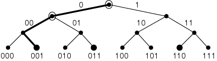

Figure 1: Tree-walking example: Solid circles at leaves represent tags. Subtrees with tags are searched recursively; the dark line shows the path of depth-first search to the leftmost tag, denoted 001. Open circles indicate collisions, where tags occur in both left and right subtrees.
Back to Article